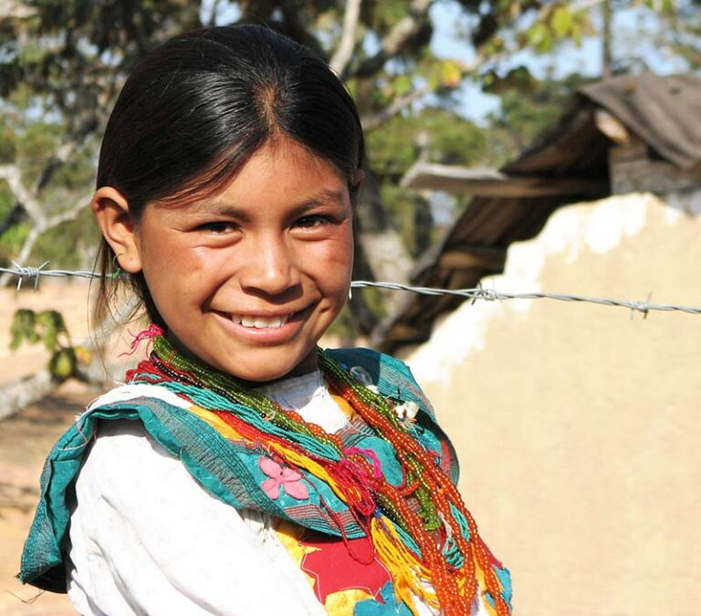

México es uno de los países con mayor diversidad lingüística en el mundo. Actualmente, existen 68 lenguas indígenas reconocidas oficialmente, con más de 350 variantes dialectales, habladas por millones de personas en todo el país. Estas lenguas son un reflejo de la riqueza cultural de los pueblos indígenas y han sido transmitidas de generación en generación.
Algunas de las lenguas indígenas con mayor número de hablantes son:
A pesar de su riqueza, muchas de estas lenguas están en peligro de extinción debido a la discriminación,
la migración y la falta de políticas de preservación. Organizaciones y comunidades indígenas trabajan
para revitalizarlas mediante la enseñanza en escuelas, la literatura escrita y el uso en medios digitales.
Preservar las lenguas indígenas es fundamental para mantener vivas las tradiciones,
conocimientos y cosmovisión de los pueblos originarios de México.
